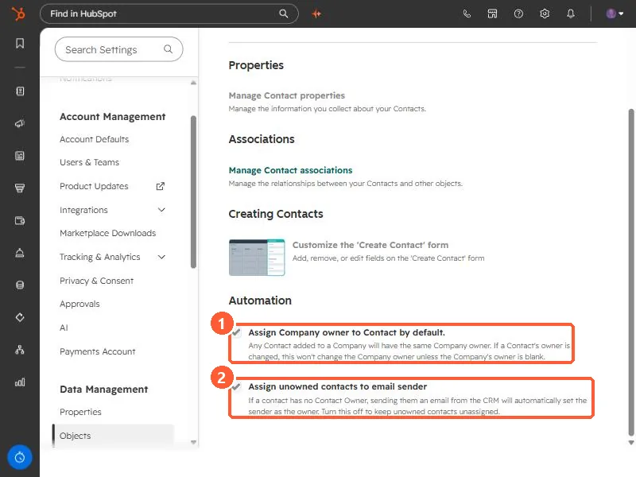

Short answer
In Settings, Objects, Contacts, the Setup tab's Automation section has two ownership settings. Assign unowned contacts to email sender: if a contact has no owner, the user who emails them from the CRM becomes the owner. HubSpot says it is on by default and also applies to one-to-one emails received and logged. Assign Company owner to Contact by default: contacts added to a company get the company's owner. Both are on in my demo.
1. Where the settings are
Open Contacts settings and scroll to Automation at the bottom of the Setup tab.


2. What each one does
- Assign Company owner to Contact by default. Any contact added to a company gets the same owner as the company. The setting's text says changing a contact's owner will not change the company's owner unless the company has none.
- Assign unowned contacts to email sender. If a contact has no owner, sending them an email from the CRM sets the sender as owner. HubSpot's ownership article says this also applies to one-to-one emails received and logged to the contact, and that the setting is on by default.
3. When to turn it off
- Support, success, or ops users email unassigned contacts and accidentally take ownership of leads.
- You assign owners by round robin or territory in a workflow, and the email race gets there first.
- You report on unassigned contacts as a queue. See bulk assign owners and the speed-to-lead workflow.
Turning it off does not change owners already set. Check the contact's owner history to see who was assigned and when.